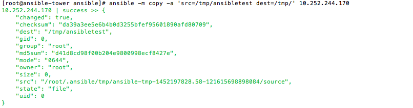
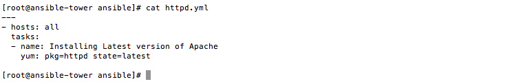
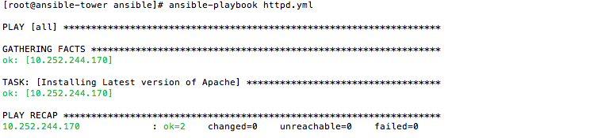

What is Ansible ?
Ansible is the automation platform for configuring, manageing and deploying the system.It manages nodes over SSH or PowerShell.it manages many servers from single machine i.e ansible is installed in only master server..
Installation Process
Assuming you already have virtual box and vagrant setup.We will move the process further from there.
$ vagrant init tower http://vms.ansible.com/ansible-tower-2.4.3-virtualbox.box $ vagrant up $ vagrant ssh
Install ansible in mac
Sudo easy_install pip sudo pip install ansible
To upgrade ansible
sudo pip install ansible --upgrade
Install ansible in redhat/centos
Get the epel repo
yum install ansible
Path to setup the inventory
vi /etc/ansible/hosts
Pinglinux1.com ansible_ssh_host=192.168.1.5 ansible_ssh_user=username Pinglinux2.com ansible_ssh_host=192.168.1.6 ansible_ssh_user=root Pinglinux3.com ansible_ssh_host=192.168.1.7 ansible_ssh_user=ec2-user
192.168.1.5 192.168.1.6:22222 192.168.1.7
1) Make sure you can connect to each of this servers from your localmachine without password
i.e you have placed your public key on each of this host.
2) Define path while runnign the module or playbook using -i path if its not default /etc/ansible/hosts
3)export ANSIBLE_HOSTS=path_to_hostfile
Testing if you could connect to this servers
ansible -m ping all ansible -m ping pinglinux1.com #ping only one server
pinglinux1.com | success >> {
"changed": false,
"ping":"pong"
}
pinglinux2.com | success >> {
"changed": false,
"ping":"pong"
}
pinglinux3.com | success >> {
"changed": false,
"ping":"pong"
}
This indicates that hosts are up and running as well as ansible can ping them all.
Shell Modulee
Running the shell command on the remote host from local machine
ansible -m shell -a 'uname -a' 192.168.1.5
192.168.1.5 | success | rc=0 >> Linux pinglinux.com 2.6.32-431.29.2.el6.x86_64 #1 SMP Tue Sep 9 21:36:05 UTC 2014 x86_64 x86_64 x86_64 GNU/Linux
Copy Module
Copying the files/directories
ansbile -m copy -a 'src=/tmp/pinglinux' 192.168.1.10
1)all indicates 'all hosts found in the inventory list' 2) you can point the inventory while running the command 3) Run the command as sudo eg: ansible -i /etc/anisble/hosts -m copy -a 'src=/tmp/file dest=/tmp/' all -sudo
Playbook
it is a series of commands in a file that are targeted to the particular host or groups. i.e. ansible configuration management script. Lets install the httpd package in the web servers group which include 3hosts.
vi httpd.yml
---
- hosts: all or webservers or ipaddress
tasks:
- name: Installing Latest version of Apache
yum: pkg=httpd state=latest
anisble-playbook path/httpd.yml
To install it only in one server.
anisble-playbook -l pinglinux.com path/httpd.yml
Example
ansible-playbook httpd.yml
Different ways to manage your host file
hostname ==> module applies to one host hostname:hostname ==> modules applies to two host all ==> modules applies to all host * ==> modules applies to all host *.example.com => applies t all host that has domain name example.com Grouping the hostname eg webservers: [webserver] pinglinux1.com pinglinux2.com pinglinux3.com